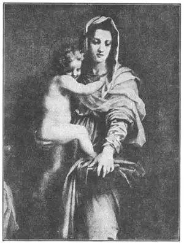
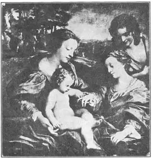

15
A TAILOR’S SON AND A MASTER OF LIGHT
裁缝之子和光影大师

IF YOUR name were Andrea, and if your father were a tailor, and if you were called Andrea of the Tailor, people would always be asking, “Can you paint pictures?” For Andrea of the Tailor was a famous painter; one of the Born Again painters of Florence. Italians, of course, didn’t use English words for the painter’s name. What they called him was Andrea del Sarto, which is the Italian way of saying Andrea of the Tailor.
When this son of the tailor grew up he married, strange to say, the widow of a hatter——a man who made hats. She was a beautiful woman but was always scolding and was very extravagant and selfish and spent Andrea’s money as fast as he could make it.
Two of Andrea’s paintings were sent to France and when the King of France saw them, he wanted the painter to come to France and paint for him. So to France Andrea went. The king was pleased with his work and paid him well, but soon Andrea got a letter from his wife telling him to come back to Italy. The king made him promise he would return to France very soon and gave him money to buy some pictures in Italy to bring back to France.
And now we see that Andrea’s pictures were better than he was, for Andrea was what we call a “weak” man. When he got home to Italy, his wife made him build her a fine house. And when Andrea found his own money wasn’t enough for the house he used the king’s money! Of course, after such dishonesty, he was afraid ever to go to France again.
In Italy, Andrea painted several pictures in fresco on the walls of monasteries. You remember I told you what fresco painting was. The artist painted on the plaster while it was still wet so the colors would soak into the wall. If a painter made a mistake in fresco painting, he couldn’t rub it out, because the picture was part of the plaster. So most artists touched up their fresco paintings after the plaster was dry. Andrea, however, never did this. He could paint so well that he didn’t have to correct mistakes after the picture was finished. There weren’t any mistakes to correct.
Andrea painted in oil as well as in fresco. You remember, don’t you, that the early Renaissance painters used to mix their paints with egg or glue? Then some one discovered that it was better to mix paints with oil, and soon all the painters were using oil paints except for fresco. In the old egg or glue way of painting artists had to paint on a board covered with a kind of smooth plaster called gesso (jes’so). With oil paints they could paint their pictures on canvas or boards without using gesso. This was much easier and it also made the pictures look better.
Andrea’s most famous oil painting is a Madonna. The baby Christ is in her arms, on one side stands Saint Francis, on the other Saint John, with two little angels between them. The picture has a peculiar name. It is called “The Madonna of the Harpies.” Do you know what harpies are? Harpies are make-believe animals—birds with women’s heads. The Madonna in Andrea’s picture is standing on a block or pedestal which is decorated with two little harpies. That’s why we call it “The Madonna of the Harpies.”
The Madonna in this picture is supposed to look like Andrea’s wife. He painted her likeness in almost all his pictures, but when poor Andrea finally caught the plague and became very ill, his selfish wife was so afraid of catching the disease herself that she left him alone and uncared for till he died.

No. 15-1 DETAIL OF THE MADONNA OF THE HARPIES（《有鸟身女妖基座的圣母玛利亚像》） DEL SARTO（德尔萨托 作）
Andrea del Sarto was named for his father’s trade. Now we come to a painter who was named for his home town. You remember Perugino, who was named for the town where he lived? Well, not a great distance from Perugia is the town of Correggio where there lived a painter known everywhere by the name of his town. We don’t know much about Correggio’s life, but we can admire his pictures. Like Andrea del Sarto, Correggio painted both in fresco and in oils. All his frescoes are in the city of Parma, in Italy, where he worked on the cathedral and the churches.
The cathedral in Parma has a round tower on top called a cupola and Correggio painted a picture for the inside of the cupola. The picture was circular so it would fit into the ceiling of the cupola. As it could be looked at only from the floor below, Correggio decided to make the angels and other figures in the picture look like real figures flying through the air and seen from underneath. If you should look straight up and see an angel flying above your head you would see the soles of the angel’s feet nearer to you than his head. You would see Courtesy of the Metropolitan Museum of Art just the opposite view if you looked down on the top of some one’s head.

No. 15-2 THE MYSTIC MARRIAGE OF ST. CATHERINE（《圣凯瑟琳的神秘婚礼》）
CORREGGIO（科雷吉欧 作）
Courtesy of the Metropolitan Museum of Art
To paint a figure seen from below was something that very few artists knew how to do. Correggio first had a sculptor make some models in clay so he would know how people would look in these strange positions. The way he painted them we call foreshortening.
Correggio did other foreshortened cupola pictures. People who saw them didn’t quite know what to make of them. It was such a new way of painting that at first it wasn’t liked very much. One man said such a painting looked like a hash of frogs. But the painter Titian came to Parma and when he saw Correggio’s cupola picture in the cathedral he said, “Turn the cupola upside down and fill it with gold and even that will not be the picture’s money worth.”
Correggio’s oil paintings are noted for their wonderful light and shade. He was what we call a master of light and shade. The people in his paintings are graceful, smiling, pretty, and happy-looking, and so almost everybody likes them. The main fault people find with them is that they do not seem to mean very much. Correggio was not a great thinker like Michelangelo and Leonardo da Vinci.
Another one of Corregio’s paintings is called “The Mystic Marriage of Saint Catherine.” Saint Catherine dreamed she was being married to the baby Christ and this picture shows the Baby playing with the wedding-ring that Saint Catherine had seen in her dream.
Just as famous as this painting is one called “Holy Night” or “The Adoration of the Shepherds.” It shows the Baby in His manger with His mother and the shepherds around Him. A wonderful glow of light comes from the manger where the Baby lies, and lights up the faces of those who worship Him.
A strange story is told of Correggio’s death, but whether it is true or not we do not know for sure. According to this story, Correggio was paid for one of his paintings all in bronze coins. You know that if you pay in pennies for something expensive, it takes lots of pennies. And this payment to Correggio took so many bronze coins that it made a very heavy load. Correggio started out to carry this load of coins home. It was a hot day and the heavy load made Correggio so hot and tired that he became ill, had to go to bed and soon died. And that was the end of this master of light and shade, but his paintings have lived on after him to give pleasure to all who see them.
【中文阅读】
如果你叫安德烈，爸爸是个裁缝，又被称作“裁缝安德烈”，人们就会不停地问：“会画画吗？”这是因为“裁缝安德烈”是文艺复兴时期佛罗伦萨一位著名的画家。当然，意大利人不会给这位画家取英文名字的，他们叫他安德烈亚·德尔萨托，这是意大利语中“裁缝安德烈”的表达方式。
说来也怪，裁缝的儿子长大后，娶了一位帽匠的遗孀。这位寡妇长得倒挺标致，但总是骂东骂西的，而且自私自利，挥霍无度，她花钱的速度和安德烈挣钱的速度一样快。
安德烈的两幅画被送到了法国。法国国王看到后，就想叫画家到法国为他画画。于是，安德烈去了法国。国王对他的作品十分满意，付给他高额报酬。但是没多久，安德烈就收到妻子的一封信，叫他回意大利。国王要安德烈答应一定尽快再来法国，还给了他一笔钱，让他从意大利买几幅画带到法国。
接下来，我们知道，安德烈的绘画比他本人好得多，因为他正是我们所说的那种“懦弱”的人。安德烈回到意大利家中后，妻子要他为她建一座豪宅。当他发现自 己的钱不够建房时，竟挪用了国王托他买画的钱！毋庸置疑，他做了这样一件昧心事后，再也不敢去法国了。
在意大利，安德烈为修道院画过一些湿壁画。还记得我讲过什么是湿壁画吧。画家在灰泥墙还没干的时候就开始画，使颜料渗透到墙里。如果画家在画湿壁画时错了一笔，就没法擦掉，因为这画已经成为灰泥墙不可分割的一部分。所以，大多画家在灰泥干了后再进行润色。不过安德烈从不这么做。他画得很好，所以画完后，根本不需要做任何修改，因为实在没有错误要修改。
安德烈的油画和湿壁画一样好。难道不记得早期文艺复兴画家常常将颜料和蛋清或胶水混合在一起使用吗？不过后来有人发现将颜料和油混合一起则更好用，所以没过多久，除了湿壁画外，所有的画家都开始用油料作画。如果用传统的蛋清或胶水混合制成颜料的话，那么画家就得在涂有一种叫“石膏粉”的光滑的灰泥木板上绘画。但如果用油料的话，他们就可以在帆布或没有涂石膏粉的木板上作画。这样就容易多了，而且画出来的画也好看得多。
安德烈最为著名的一幅油画是圣母像。画中，圣母玛利亚怀抱圣婴基督，圣方济各和圣约翰分别站在两旁，中间还有两个小天使。这幅画有一个很特别的名字，叫《有鸟身女妖基座的圣母玛利亚像》。你知道“鸟身女妖”是什么吗？鸟身女妖是一种虚构的动物，一种长着女人脑袋的鸟。安德烈画中的圣母站在一个基座上，基座上配有两个小的鸟身女妖做装饰。这就是我们为什么把这幅画称作《有鸟身女妖基座的圣母玛利亚像》的原因。
据猜测，这幅画中的圣母玛利亚看起来很像安德烈的妻子。他所有的画里都有以他妻子为原型的人物。不过，当可怜的安德烈染上瘟疫，病得很重的时候，他那自私自利的妻子却因为害怕传染弃他而去，一直到安德烈去世都没来照顾他。
安德烈·德尔萨托是以他父亲的职业而命名的。现在我们来认识另一位画家，他是以自己家乡起名的。还记得那个以居住地起名画家佩鲁吉诺吧？在离佩鲁贾不远的地方，有一个叫“科雷吉欧”的小镇，镇上住着一位画家，大家都以小镇的名字来喊他。我们对科雷吉欧的生平不是很了解，但我们都很欣赏他的绘画作品。同安德烈·德尔萨托一样，科雷吉欧既画湿壁画也画油画。他所有的湿壁画都保存在意大利的帕尔玛，因为他以前在那里专为教堂和修道院作画。
帕尔玛的大教堂顶部有一个圆形的塔，叫圆顶塔。科雷吉欧在这个圆顶塔内画了一幅画。这幅画是圆形的，所以刚好适合圆顶塔的天花板。因为这幅画只能站在地板上从下往上看，所以科雷吉欧决定将画中的天使和人物画成往上才能看到的在天空飞翔时的样子。假如你抬头看见一位天使从你头顶飞过的话，你肯定能看见天使的脚底要比他的头离你更近一些。但是，如果你从一个人头部往下看的话，你会觉得他的头离你更近。
很少有画家知道能把从下往上看时的人物样子画出来。科雷吉欧首先请来一位雕刻家，让他做些泥人模型，这样他就能看到人们在各种奇奇怪怪姿态下的样子。我们把他这种绘画方式叫着“缩短法”。
科雷吉欧还画了一些圆顶画，也是按照“缩短法”画的。但是，人们根本不知道这些画是怎样画成的。因为这是一种新型的绘画方法，所以一开始并不是很受欢迎。有人甚至说这种画看起来就像是画了一堆青蛙。不过后来，一位叫提香的画家来到帕尔玛，当他看到科雷吉欧在大教堂圆顶上画的那幅画时，他惊叹道：“就算是把圆顶塔拆下来后全填满金子，也抵不上这幅画的价值。”
科雷吉欧的油画以其绝妙的光影而闻名。他正是我们所说的光影大师。他画中的人物很优雅，笑容满面，精致可爱，神态快乐，所以几乎人人喜欢。人们发现画中人物的唯一缺陷就是他们好像没有多少内涵，这是因为科雷吉欧不是米开朗基罗和达芬奇那样伟大的思想家。
科雷吉欧的另外一幅画叫《圣凯瑟琳的神秘婚礼》。圣凯瑟琳曾梦到自己即将嫁给圣婴基督，而这幅画正向我们展示了圣婴在玩弄圣凯瑟琳梦中所见的那枚结婚戒指时的情景。
他还有一幅画和这幅一样有名，叫《圣夜》或《牧羊人的膜拜》。画面上，圣婴躺在马槽里，他母亲和牧羊人围在他周围。一道绚丽的光芒射进圣婴卧的马槽，膜拜的人们的脸庞在光照下显得神采奕奕。
有一个关于科雷吉欧去世的奇怪故事，但我们无法考究这个故事的真实性。据说，有人要买科雷吉欧的一幅画，但全用铜币来支付。要知道如果用硬币支付一些贵重东西的话，那得要很多很多的硬币。所以科雷吉欧这卖画所得的一大堆铜币成了一个大负担。科雷吉欧要把这堆铜板带回家，那天天气刚好很热，就这样一下子把科雷吉欧累病倒了。他卧病在床没多久就去世了。光影大师的一生就这样结束了，但他的绘画在他死后，一直给人们带来快乐。